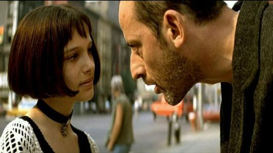

“在这儿我们安全了，Leon”，当Matilda把兰花从盆中移入土地的时候，她轻轻地说。 镜头越过女孩的头顶渐高渐远，夏日的纽约阳光明媚，绿树葱茏。 然后，黑色的字幕，随着Sting的歌声响起。
是想要忍住的，却终于还是怔怔地掉下泪来，到不能自已的放声恸哭，身体因为感动和震撼显得有点抽搐。 爱与不爱已经分不清了，只是那种决然的离别实在让人透不过气。
Leon是一个40岁的杀手，始终恪守着不杀女人和孩子的原则。 他是沉默的、冷酷的、聪明的，同时也是简单的、淳朴的、天真的。
他习惯坐在沙发上睡觉，每次买两盒牛奶，深爱着象他一样无根的兰花，他仔细擦拭每一片叶子，清晨把它放在窗外晒太阳，傍晚再搬进来。在没有任务的时候，他会独自坐在空荡荡的电影院里认真地盯着银幕看，孩子般欢喜地咧着嘴傻笑。
Matilda只有12岁，她柔弱、孤独、倔强、任性，有着天使般的面孔和冷漠的眼睛，还有着超乎年龄的成熟。她总能让我想起《情人》中的少女，一样的单薄躯体，然而却已经隐约散发出令人无法抵御的魅力。
是Leon问Matilda脸上的伤从何而来，是Leon递手绢给挨打后流着鼻血的Matilda，是Matilda灿烂地笑着说我帮你去买牛奶吧一盒还是两盒是两盒对吗，是Matilda回来看见门口的凶手和倒在血泊中的家人径直去按Leon的门铃，是Leon在锁孔里看见Matilda祈求的眼神在内心激烈交战，还是Leon开门后Matilda的脸被天堂一样的光照亮的时候？
不管是怎样的一种开始，在这个没有温度的世界，他们用心灵给予彼此温暖的瞬间。他们之间的爱是那么超然，介于爱情与亲情之间，或许更加复杂，或许更加单纯。
女孩说，Leon，我想我是爱上你了，你是我所爱上的第一个人。 杀手问，你怎么知道，既然你没有爱过。 女孩说，我感觉得到。 杀手问：在哪里？ 女孩把手放在肚子上说，在这里，在我的胃里，它是热的。以前这里总像打了结似的，但现在不会了。 杀手说，恭喜你胃病好了，但这不代表什么。
也曾想过，如果生活里没有复仇这两个字，Leon就可以与Matilda幸福快乐地在一起，他会等着女孩渐渐长成女人。 可很多事情并不如我们想象的那样，宿命让他们在刚刚体会到生活里从未有过的喜悦时，便面临命运中毫不留情的死亡气息。当杀手对女孩承诺他一定会脱险去找她从此远走高飞时，我们和他一样清楚这只是善意的谎言。那枪林弹雨中的第一声“我爱你”，也成了最后一声。 轻柔的琴声里响起一声沉重的低音，镜头模糊，摇晃，冰冷地面上奄奄一息的杀手。然而，他终于还是为Matilda报了仇，惊天动地的爆炸声里，Leon轻轻阖上了沉静的眼睛。
一直以来，对于这个结局，我是心有不甘的，但是，又能怎样呢？
一幅画不是众多物件简单拼凑而成的。牛只是一头牛，草地也只有青草和鲜花，而穿过树枝的阳光也仅仅只是一束光，但如果将它们放到一起，就会产生魔一般的魅力。
女孩还有好多自己的路要走，她还有很多自己的眼泪要流。
记得在影片的开始，Matilda问Leon：“人生好辛苦，还是长大就好了？”Leon简单地回答：“一直如此。” 一直如此啊。